At a glance
| Step | Who | Today's autopilot | Ours |
|---|---|---|---|
| Detect jamming | Den | 5 s, then blind landing | 1 s |
| Detect slow spoofing (0.5 m/s) | Den | never | 13 s |
| Navigate 8.8 km in snow | Guled | 1974 m off (IMU only) | 14.5 m off (terrain matching) |
| Locate the jammer | Guled | not done | ~120 m typical (2 drones) |
| Decide (AI mission brain) | Guled | mission aborted | mission completed, 8 m from target |
| Share + reroute (3-drone swarm) | Den | 0 / 3 reach target | 24 / 24 (8 runs) |
| Fake reports from a captured drone | Guled's idea, Den | 9 drones lured (no defence) | 1 lured, liar caught 6 / 6 |
All results are simulation: PX4 autopilot in the Gazebo simulator plus Python models. Not real flights.
How we got here
- THURSDAY
- Talked to the Swedish Air Force first. Jamming happens "really often", detection must be fast, snow hides landmarks, a real drone once came home on its own map.
- Toy model: a standard check misses slow spoofing; a check over a time window catches it.
- Tested the real autopilot (PX4): reacts in 5 s, lands blind, never flies home. Repeated it; only claims that reproduced.
- Optical-flow drone crashed on plain ground: no texture, the same problem as snow. Fixed with a textured world.
- Detector on real flight data caught nothing (we modelled the IMU 50× too noisy), then gave 25 % false alarms. Measured the real IMU, retuned: 0.5 m/s spoof caught in 13 s, 2/50 false alarms.
- FRIDAY
- Live demo: arrow-key flight, GPS jam on one key. Our monitor 1 s vs PX4 5 s.
- Guled: navigation in snow (camera fails, terrain matching 14.5 m after 8.8 km) and jammer hunter (first version overconfident, fixed).
- Briefing & networking: satellite maps, drone-to-drone links, 5G, pre-loaded maps → "never trust one source".
- Military: "detect + return home already exists. Tell the others and still reach the target." We changed the headline.
- Swarm reroute: drones looped in and out of the zone. Fixed the danger map and the route planner: 24/24 reach the target vs 0/3 today.
- Guled: AI mission brain — Claude decides what, tested code flies; safety layer on every action.
- Guled: "an enemy can fake the warnings" → we attacked our own system.
- Two defences failed (the liar won the vote), the third worked: a warning is cheap to believe, an all-clear must be proven. Liar caught 6/6, no honest drone rejected.
1. Today's autopilot under GPS jamming (real PX4 simulator)
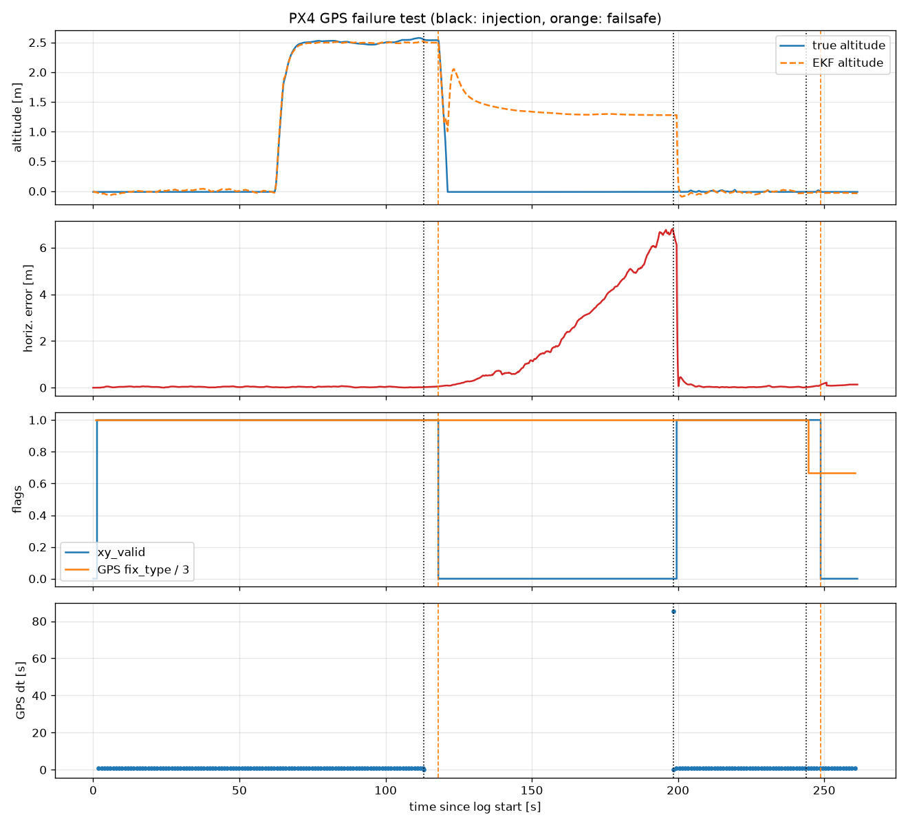
2. Live demo: fly with the arrow keys, jam GPS with one key
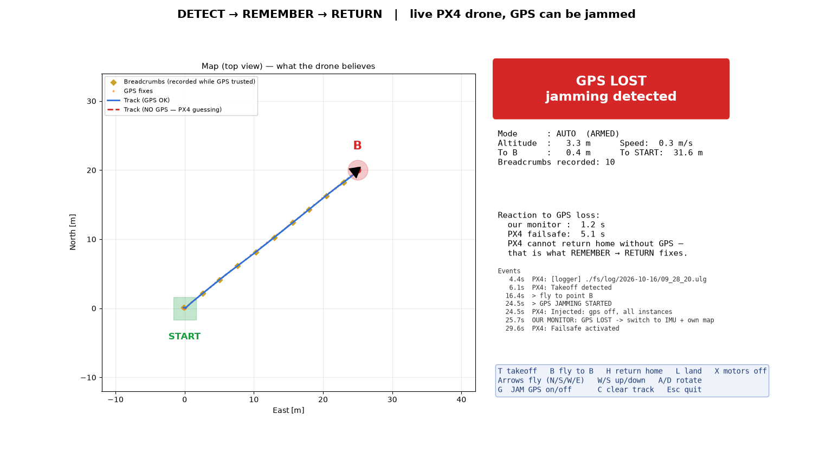
3. Detecting slow GPS spoofing on real flight data
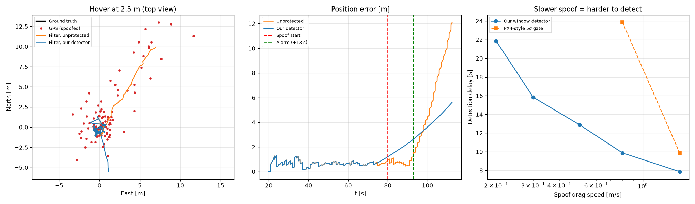
“GPS noise is random; a spoofer always pushes the same way. We compare GPS with the drone's own motion sensors and catch the push.”
4. 8.8 km without GPS, in snow
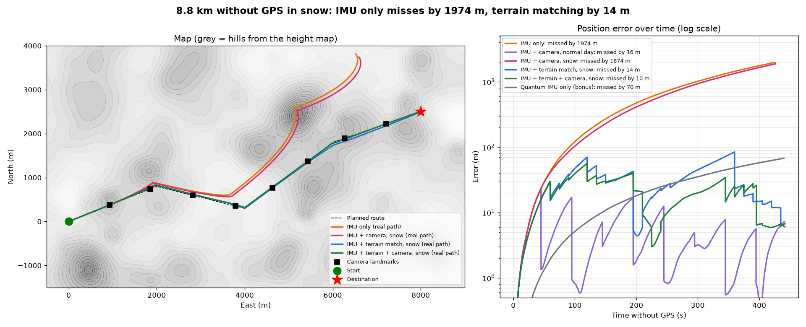
5. Jammer hunter: drones as sensors
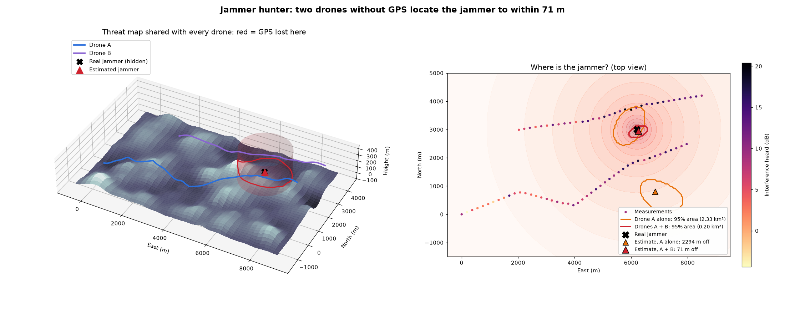
6. AI mission brain: assess, tell others, find a way
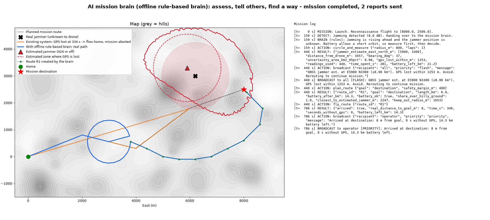
The AI decides what to do; tested code decides how to fly it. Every action passes a safety check (battery reserve, limits). Shown: offline rule-based brain.
7. One drone jammed, the whole swarm learns
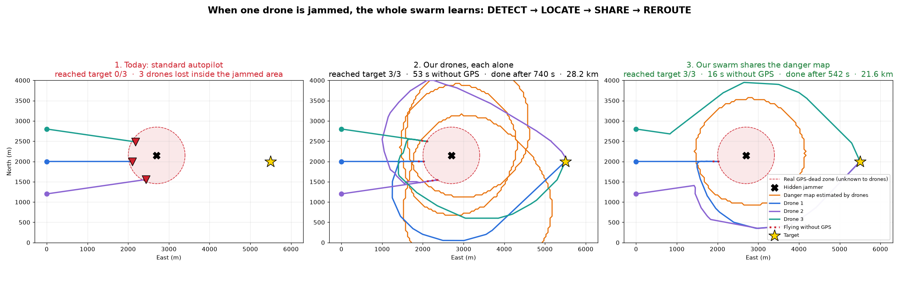
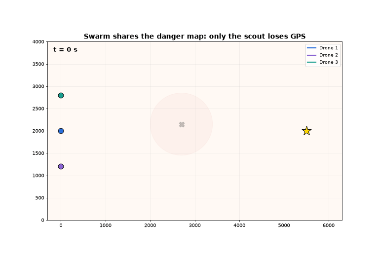
7b. Live in the simulator: 3 PX4 drones at a military base
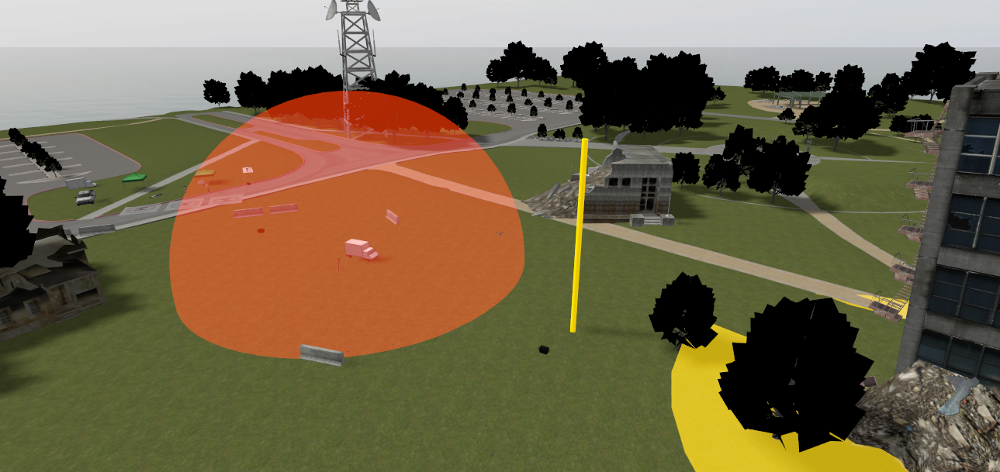
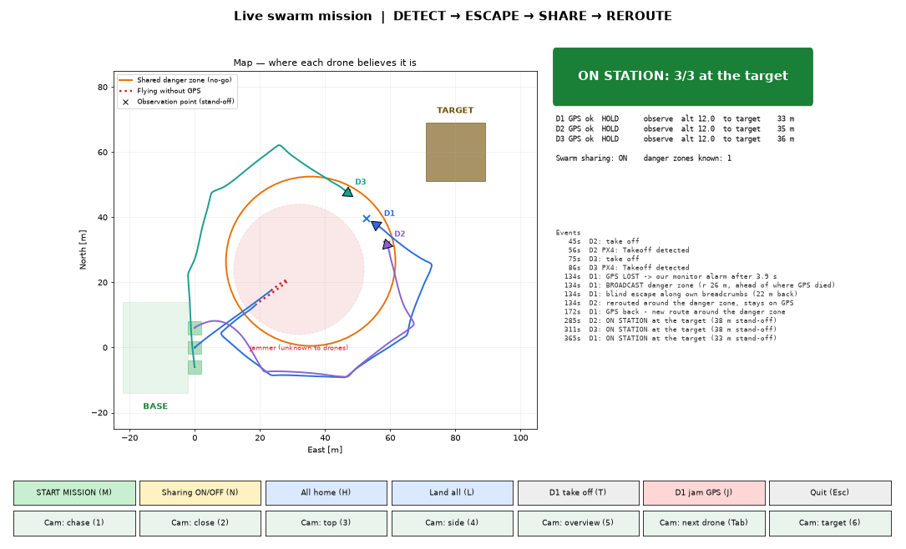
Real PX4 autopilots in Gazebo. The scout flies into the jammer, backs out blind on its own breadcrumbs and warns the others; they fly around the danger zone. Jamming is simulated by switching GPS off inside the red dome.
8. We attacked our own system: fake reports from a captured drone
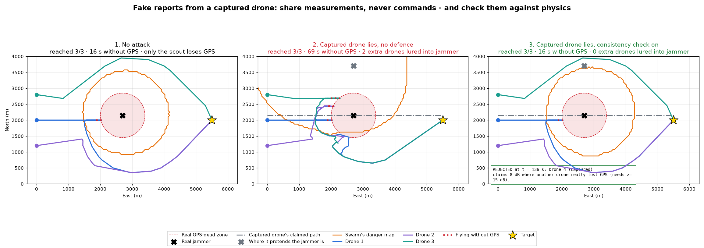
Share measurements, never commands. A warning is cheap to believe; an "all clear" must be proven against places where a drone really lost GPS.
9. First ideas
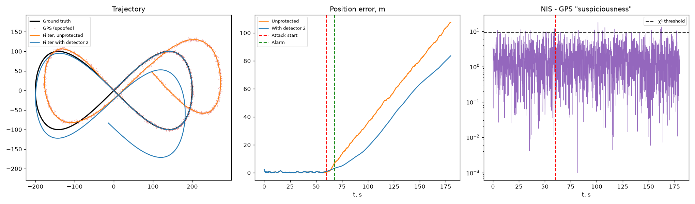
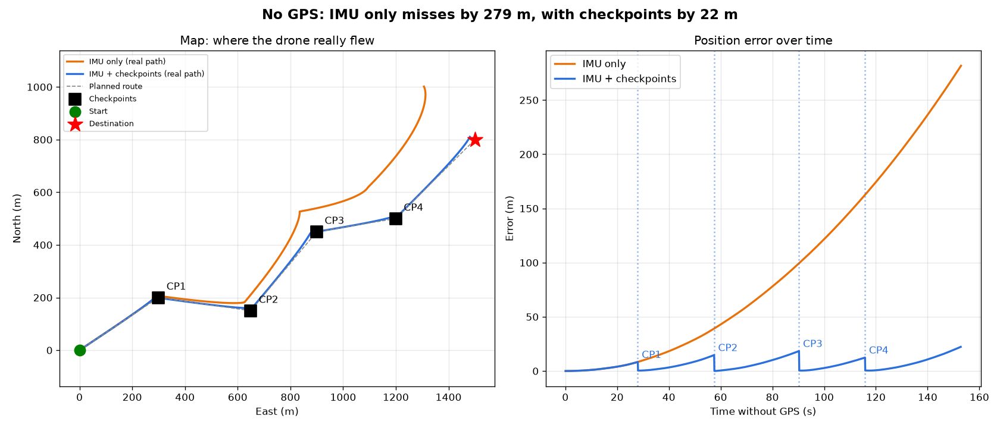
All results are simulation (PX4 SITL + Python models), not real flights. Process log with every failure and fix: JOURNEY.md.
What's left before Saturday
- Pitch deck (Guled). Upload by Sat 12:30, 5 minutes. Numbers must match this page.
- One real Claude run of the AI mission brain, so the slide shows real AI reasoning (needs an API key, costs cents).
- Backup videos of the live demo (Win+Alt+R), in case the simulator fails on stage.
- Rehearse with a timer. Den: detection, swarm, attack. Guled: navigation, jammer hunter, AI brain.
- Sat 9:00–12:00 live demo: laptop with demo_control.py + Gazebo; ask mentors about Terra lab (real drone + Vicon).
Honest limits to mention if asked: spoofing slower than ~0.1 m/s is not caught; jammer model is free-space (real terrain is messier); the swarm assumes the drone-to-drone radio still works; a liar that stays within normal noise can't be caught by physics alone (but can't do much harm either).